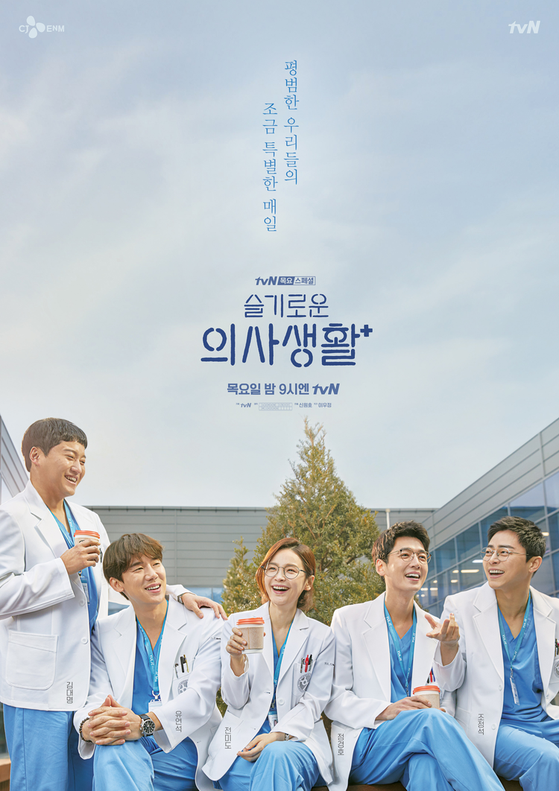

슬기로운 의사생활
1. 개요
(TMI) 실제 나무위키를 참고했다.
2020년 3월 12일부터 2020년 5월 28일까지 방영한 tvn 목요 스페셜 드라마. 99학번 의대 동기 다섯 명을 중심으로 병원에서 펼쳐지는 이야기를 그린다.

2. 기획 의도
(TMI) 나무위키 글이 길어서 조금만 발췌했다.
'메디컬'이라 쓰고, '라이프'라 읽는,
[슬기로운 의사생활]은 우리네 평범한 삶의 이야기다.
한 사람, 한 사람의 '생로병사'가 모여, 수만 가지 이야기가 녹아 있는 곳.
탄생의 기쁨과 영원한 헤어짐의 전혀 다른 인사들이 공존하는 곳.
같은 병을 가진 것만으로 큰 힘이 되다 가도,
때론 누군가의 불행을 통해 위로를 얻기도 하는 아이러니 한 곳.
흡사 우리의 인생과 너무나도 닮아 있는 곳.
바로 병원이다.
3. 등장인물
(TMI) 조정석이 너무 좋다
자세한 내용은 슬기로운 의사생활/등장인물 문서를 참고하십시오.